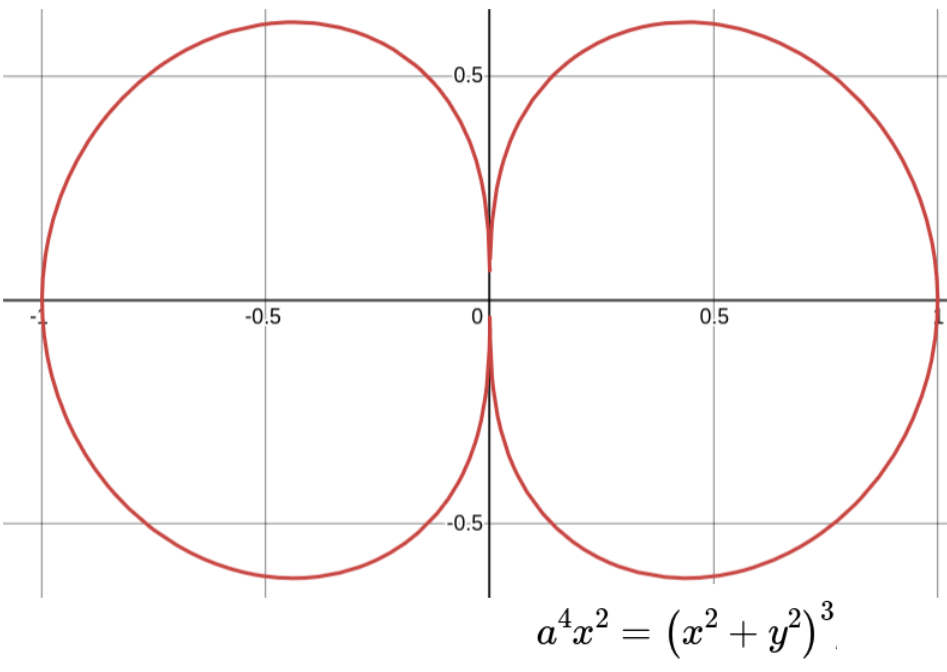
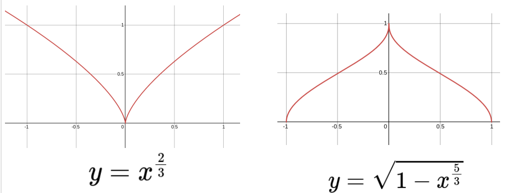
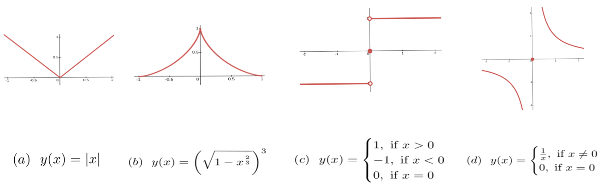
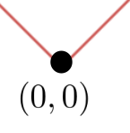
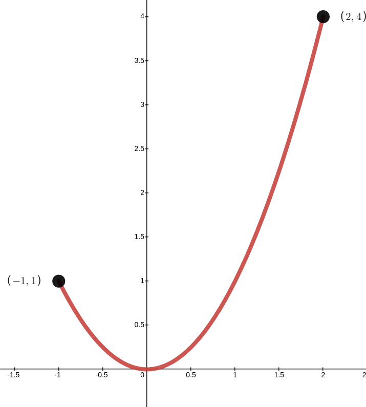

As we saw in Example 9.4.0.1 once we’ve found the objective function, \(O(x)\text{,}\) our optimization problem becomes the more abstract problem of finding the extreme points of the graph of \(O(x)\text{.}\) An optimization problem ultimately comes down to finding all of the local extrema. The maximum among those will be the global maximum, and the minimum among those will be the global minimum. Assuming of course, that either actually exists.
Thus our first task is to identify all of the local extrema. But finding the local extreme points of the graph of an arbitrary objective function can be more complicated than we’ve seen in any of our examples so far. In this section we will address these complications. By the end of the section we will have a general procedure for solving this more abstract optimization problem.
Subsection9.5.1An Illustrative Example from \(1750\)
As a proud Englishman, Simpson used Newton’s fluxional notation exclusively but we will stick with differential notation since we are more familiar with that.
Problem9.5.1.1.
In modern parlance the problem is stated as follows: Find the maximum and minimum values of \(y\) subject to the constraint that
if either exists. We assume as usual that \(a\) is a constant.
(a)
According to Fermat’s Theorem 9.1.0.1, if \(y\) is differentiable at a point and \(y\) is a maximum (or a minimum) at that point then the line tangent to the curve will be horizontal at that point. So we will need to compute the derivative of \(y\) with respect to \(x\text{.}\)
is the derivative of the curve \(a^4x^2={\left(x^2+y^2\right)}^3\text{,}\)
(b)
By setting the numerator of equation (9.25) equal to zero show that \(x=\pm \frac{1}{3^{\frac{3}{4}}}a\) and use these values to show that when \(\dfdx{y}{x}=0\text{,}\)\(y=\pm
a\sqrt{\frac{2}{3\sqrt{3}}}\text{.}\)
(c)
Conclude that the maximum value of \(y\) is \(a\sqrt{\frac{2}{3\sqrt{3}}}\) and the minimum value is \(-a\sqrt{\frac{2}{3\sqrt{3}}}\text{.}\)
Problem 9.5.1.1 seems pretty straightforward. But when you examine it more closely some difficult questions arise.
First, as we’ve been emphasizing, Fermat’s Theorem 9.1.0.1 does not say that if \(\dfdx{y}{x}=0 \) there will be an extremum, it says that if there is an extremum then \(\dfdx{y}{x}=0 \text{.}\) So our conclusion is dubious at best.
To be clear, we have found the maximum and minimum. But the work we’ve done here doesn’t fully support that conclusion. We will address this in the next section.
Second notice that \(\dfdx{y}{x}\) is not meaningful when either \(y=0\) or \(x=0\) (why not?). If we sketch the graph of this curve when \(a=1\text{,}\) we can see what is happening here.

When \(y=0\) or \(x=0\) the slope of the curve appears to be infinite (or is it negatively infinite?). This doesn’t cause any issues in this problem since none of these are extremal points for this curve. But for other curves they could be.
For example, each of the following curves have an extremum at \(x=0\) but neither of their derivatives
exists at the origin. In fact the slopes of both curves go (positively or negatively infinite at \(x=0\)

Figure9.5.1.2.
Combining these examples with Simpson’s, we see that a non–existent derivative can result in a maximum, a minimum or no extremum at all. Things can become very complicated very quickly when we start looking for maxima and minima. We’ll have to get organized.
Subsection9.5.2Identifying and Distinguishing Maxima and Minima
Use your favorite graphing utility to graph the function \(O(x)=x^3-3x \) and confirm visually that it has a local maximum at \((-1, 2)\text{,}\) and a local minimum at \((1,-2)\text{.}\) This seems to be easy to do when we have the graph in front of us. But in the absence of a graph how could we tell which is the maximum and which is the minimum?
Sometimes even having the graph isn’t much help. For example, see if you can visually identify the global maximum and global minimum of the graph of
We’ll need an analytic method; one that doesn’t rely on pictures. To that end, consider the following theorem from elementary Algebra.
Theorem9.5.2.1.
If a line has positive slope then the \(y\) coordinate increases as the \(x\) coordinate increases.
If a line has negative slope then the \(y\) coordinate decreases as the \(x\) coordinate increases.
Lines are easy to think about of course, because the slope of a line is constant. If the slope of a line is \(5\) here, then it is also \(5\) over there, and way back there too. But we know that the slope of a curve can change from point to point so we will need to generalize Theorem 9.5.2.1 to a statement about curves. Theorem 9.5.2.1 generalizes to curves as follows.
Theorem9.5.2.2.The First Derivative Test.
Suppose \(f\) is a function of \(x\text{.}\) The following statements are true:
If \(f^\prime(a)\gt 0\text{,}\) on some interval then \(f(x)\) is increasing on the interval.
If \(f^\prime(a)\lt 0\text{,}\) on some interval then \(f(x)\) is decreasing on the interval.
The First Derivative Test is precisely the tool we need to distinguish a maximum from a minimum. It will also turn out to be the tool that will allow us to determine via computation, rather than intuition, if a given objective function has a maximum or minimum. Take a moment to think about how this works before reading further.
Subsection9.5.3Transition Points, and Possible Transition Points on Open Intervals
Notice that, for the moment, we are confining our attention to functions whose domains are open intervals.
From the First Derivative Test 9.5.2.2 we see that if the derivative of \(O(x)\) is positive then \(O(x)\) is increasing and if the derivative of \(O(x)\) is negative then \(O(x)\) is decreasing. So, at a maximum \(O(x)\) will transition from increasing to decreasing, and \(O^\prime(x)=\dfdx{O}{x}\) will transition from positive to negative. We conclude that to find a maximum we need to find those places where the derivative transitions from positive to negative.
Similarly, to find a local minimum, we need to find a place where the derivative transitions from negative to positive. We call such points optimal transition points because they are the places where (local) extrema must occur.
The simplest way for \(O^\prime(x)=\dfdx{O}{x}\) to make either transition is for it to pass through zero. Thus the solutions of \(O^\prime(x) = \dfdx{O}{x} =0\) are possible optimal transition points (POTPs) because these are points where and optimum might occur. But this is not guaranteed.
But In the simplest cases all we have to do is find the solutions of \(O^\prime(x)=\dfdx{O}{x}\text{,}\) then determine the sign of the derivative on either side of each such point. If it changes then we have a local extremum.
Drill9.5.3.1.
We said “in the simplest cases” in the paragraph above. We chose our words carefully. Can you think of another way for \(O^\prime(x) =\dfdx{O}{x}\) to transition from positive to negative, or from negative to positive? Give this some thought. We will come back to it.
The POTPs which are solutions of \(\dfdx{O}{x}=0\) are the easiest to think about and work with so we will focus on those for now. We will address he other situations once we have thoroughly examined this simpler case.
Example9.5.3.2.
Let \(O(x)=x^3-3x\text{.}\) The solutions of \(\dfdx{O}{x}=3x^2-3=0\) are \(x=-1\) and \(x=1\) so these are the POTPs. Sketch the graph of \(O(x)\) and follow along with our reasoning below, confirming our conclusions visually.
To determine if they actually are transition points we proceed as follows:
At \(x=-1\text{:}\)
Pick a number less than \(-1\text{,}\) say \(x=-2.\) Since \(\dfdxat{O}{x}{-2}\gt 0\) we see that \(O(x)\) is increasing to the left of \(x=-1.\)
Next pick a number between \(-1\) and the next POTP, \(x=1\text{.}\) We’ll take \(x=0\text{.}\) Since \(\dfdxat{O}{x}{0}\lt0\) we see that \(O(x)\) is decreasing to the right of \(x=-1\text{.}\)
Thus \(O(-1) =2\) is a local maximum value of \(O(x)\text{.}\)
At \(x=1\text{:}\)
As we saw above \(O(x)\) is decreasing to the left of \(x=1\) since \(\dfdxat{O}{x}{0}\lt0\text{.}\) (Zero is between \(x=-1\) and \(x=1\text{.}\))
Next choose any number to the right of \(x=1\text{.}\) We’ll choose \(x=2\text{.}\) Since \(\dfdxat{O}{x}{2}\gt0\) we see that \(O(x)\) is increasing to the right of \(x=1\text{.}\)
Thus \(O(1)=-2\) is a local minimum of \(O(x)\text{.}\)
In this example we only tested one number between adjacent POTPs. Is that enough? Give this some thought before reading on.
Of course it is. Since the POTPs are precisely those places where \(O^\prime(x)\) might change sign it follows that the sign of \(O^\prime(x)\) must either be always positive or always negative in between POTPs. Therefore, we only need to test at one value of \(x\) to find the sign of \(O(x)\) on the entire interval between POTPs.
Similarly, if \(a\) is the greatest POTP we need only test the sign of one number greater than \(a\) to determine the sign of \(O^\prime(x)\) for every value of \(x\) greater than \(a\text{.}\) and if \(a\) is the least POTP we need only test the sign of one number less than \(a\) to determine the sign of \(O^\prime(x)\) for every value of \(x\) less than \(a\text{.}\)
Problem9.5.3.3.
Does the graph of \(O(x)=x^3-3x\) have a global maximum or minimum? Explain.
Lemma9.5.3.4.
Let \(f(x)\) be a differentiable function.
Suppose \(r_1\) and \(r_2\) are two POTPs of \(f(x)\) such that there is not another POTP between them. If \(f^\prime(x)\gt
0\) for some \(x\) in the domain of \(f\) between \(r_1\) and \(r_2\text{,}\) then \(f^\prime(x)\gt 0\) for every \(x\) in the domain of \(f\) between \(r_1\) and \(r_2\text{.}\) Similarly, if \(f^\prime(x)\lt 0\) for some \(x\) between \(r_1\) and \(r_2\text{,}\) then \(f^\prime(x)\lt 0\) for every \(x\) in the domain of \(f\) between \(r_1\) and \(r_2\text{.}\)
Suppose \(r_1\) is the greatest POTP of \(f(x)\text{.}\) If \(f^\prime(x)\gt0\; (\lt0)\) for some \(x\gt r_1\) then \(f^\prime(x)\gt 0\; (\lt0)\) for all \(x\gt r_1\text{,}\) in the domain of \(f\text{.}\)
Suppose \(r_2\) is the least POTP of \(f(x)\text{.}\) If \(f^\prime(x)\gt0\; (\lt0)\) for some \(x\lt r_2\) then \(f^\prime(x)\gt 0\; (\lt0)\) for all \(x\lt r_2\text{,}\) in the domain of \(f\text{.}\)
In mathematics Theorems and Lemmas are always stated very formally, very concisely, and with as much generality as possible. There are good reasons for this but it does sometimes make them hard to read.
Problem9.5.3.5.
Read Lemma 9.5.3.4 very carefully and convince yourself that it really does say the same thing as our conclusions at the end of Example 9.5.3.2.
Remember that POTPs are possible optimal transition points. The existence of a POTP does not imply the existence of an optimum, as the next example demonstrates.
Example9.5.3.6.
Find all extrema of the graph of \(O(x)=x^5\text{.}\)
Solving \(\dfdxat{O}{x}{0}=5x^4=0\) we see that \(x=0\) is the only POTP. But elsewhere \(O^\prime(x)\gt 0\) (confirm this) so \(\dfdx{O}{x}\) is positive for every value of \(x\) except zero. In particular it is positive on the left and on the right of zero. Therefore \(O(x)=x^5\) never transitions between increasing and decreasing, so we conclude that it does not have an extremum at \(x=0\text{,}\) despite the fact that \(\dfdxat{O}{x}{0}=0\text{.}\) This may seem very curious until you graph the function.
Problem9.5.3.7.
Sketch the graph of \(O(x)=x^5\) and use it to explain how we can have \(\dfdxat{O}{x}{0}=0\) yet not have either a maximum or a minimum at \(x=0\text{.}\)
Example9.5.3.8.Constructing a Square on a Parabola, Redux.
Given our new understanding of the distinction between local and global extrema we will revisit Example 9.4.0.1. The objective function is still \(A = (x-2)^2 + (y-3)^2 \) so when we substitute the constraint, \(y = x^2\text{,}\) we get the abstract problem of finding the lowest points on the graph of
Solving \(\dfdx{A}{x}=0\) gives us three POTPs: \(x \approx-1.32\text{,}\)\(x \approx-0.43\text{,}\) and \(x \approx1.75\) as before, so the intervals we need are, \((-\infty, -1.32)\text{,}\)\((-1.32, -0.43)\text{,}\)\((-0.43, 1.75)\text{,}\) and \((1.75, \infty)\text{.}\) Because our POTPs are approximations these intervals are also approximate.
Problem9.5.3.9.
Now pretend that you don’t already know the solution of this problem. Just as in Example 9.5.3.2 we can use the First Derivative Test 9.5.2.2 to determine which of the POTPs corresponds to a local minimum and which corresponds to a maximum.
choose a point in each interval and confirm that the following statements are true.
On the (approximate) interval \((-\infty, -1.32)\)\(A^\prime(x) \lt0\)
On the (approximate) interval \((-1.32, -0.43)\)\(A^\prime(x) \gt0\)
On the (approximate) interval \((-0.43, 1.75)\)\(A^\prime(x) \lt0\)
On the (approximate) interval \((1.75, \infty)\)\(A^\prime(x) \gt0\)
(b)
Use the First Derivative Test 9.5.2.2 and the data in part 9.5.3.9.a to show that there is a local minimum at \(x\approx-1.32\) a local maximum at \(x\approx-0.43\) and a local minimum at \(x\approx1.75\text{.}\)
(c)
The data in part (a) is not sufficient to support the conclusion that there is a global minimum at \(x\approx1.75\text{?}\) Explain why not.
(d)
What additional data do we need to conclude that there is a global minimum at \(x\approx1.75\text{?}\)
Drill9.5.3.10.
Identify all possible optimal transition points, and identify the intervals on which each function is increasing and decreasing. Label each possible optimal transition point as a local or global minimum, or a local or global maximum, or neither.
In Drill 9.5.3.1 we asked if you think of a way for \(O^\prime(x) =\dfdx{O}{x}\) to transition from positive to negative, or from negative to positive without passing through zero. Clearly this is possible, otherwise we would not have asked. But it’s hard to see how this can be isn’t it? After all, at a transition point the derivative of the objective function changes signs: It transitions from negative–to–ositive or from positive–to–negative. Obviously, the only number that has positive numbers on one side and negative numbers on the other is zero. So won’t the solutions of \(\dfdx{O}{x}=0\) give us all of the possible transition points?
Example9.5.4.1.
No, they won’t. We can also have a transition point wherever \(\dfdxat{O}{x}{a}\) is meaningless. That is, when \(\dfdxat{O}{x}{a}\) is undefined. Problem 9.5.4.2 below demonstrates one way in which a derivative might be undefined.
Graph \(\dfdx{y}{x}\) to verify that \(\dfdx{y}{x}\gt 0\) when \(x\ne 0\text{.}\)
Based on Problem 9.5.4.2 it would be easy to conclude that the derivative of \(y(x)\) can only be undefined at a point \(x\) where the formula for \(\dfdx{y}{x}\) requires that we divide by zero. But this conclusion is due to the poverty of our experience with non–differentiabilty.
There are many ways that a function can fail to be differentiable at a point. Dividing by zero is only one of them. In many ways it is the simplest. The family of non–differentiable functions is a very unhappy family, indeed. We might even call it dysfunctional.
We saw two members of the family of functions in Figure 9.5.1.2 which are non–differentiable at \(x=0\text{.}\) Here are a few more.

Figure9.5.4.3.Some non–differentiable functions. Notice that some of them have extrema at their points of non–differentiability and some do not.
We have observed before that the Principle of Local Linearity is exactly what makes Calculus useful and we have relied on that truth in all of our investigations. But there is more to it than that. The Principle of Local Linearity is not only what makes Calculus useful, its what makes Calculus possible.
Take another look at graph of \(y(x) = \abs{x}\) in Figure 9.5.4.3. Do you see that the Principle of Local Linearity is not in play near the point \((0,0)\text{?}\) No matter how much we zoom in on this point the graph will never resemble a straight line, any straight line. It looks like the sketch below at every scale.

The same is true of every function shown in Figure 9.5.4.3. They all violate the Principle of Local Linearity 5.2.0.5. Close to the point \(x=0\) none of them looks like a straight line no matter what viewing scale we use.
The case of a vertical tangent line in Problem 9.5.4.2 is slightly more problematic because near \(x=0\) the graph of, for example, \(y=x^{\frac13}\) actually does look like a straight line. It looks like a vertical straight line. But the derivative of \(y=x^{\frac13}\) is
The possible optimum transition points of a function, \(O(x)\text{,}\) come in two categories:
Any point, \(x=a\text{,}\) where \(\dfdxat{O}{x}{a}=0\) is a possible optimal transition point.
Any point, \(x=a\text{,}\) where \(\dfdxat{O}{x}{a}\) is not defined is a possible optimal transition point.
Drill9.5.4.5.
For each function identify all POTPs, and identify the intervals on which the function is increasing and decreasing. Label each POTP as a local or global minimum, maximum, or neither.
You will still have to rely on their graphs to find the POTPs of some of these functions. In Chapter 16 you will learn how to find them computationally.
\(\displaystyle f(x) = \frac{x}{x^2+9}\)
\(\displaystyle f(x) = \frac1x\)
\(\displaystyle f(x) = \frac{x^2}{x^2+5}\)
\(\displaystyle f(x) = x^\frac13\)
\(\displaystyle f(x) = x^\frac23\)
\(\displaystyle f(x) = x-3x^\frac13\)
\(\displaystyle f(x) = x^\frac13(x+4)\)
\(\displaystyle f(x) = x^\frac23(x^2-8)\)
\(\displaystyle f(x) = 5x^\frac23-2x^\frac53\)
\(\displaystyle f(x) = \abs{x^2-1}\)
\(\displaystyle f(x) = \abs{x}-3\abs{x-3}\)
\(\displaystyle f(x) = \abs{x}-\abs{x-3}\)
Subsection9.5.5Transition Points on a Closed Interval; the Problem of Endpoints
Real world optimization problems will have a natural domain on which the objective function is defined. It is pointless to consider values of \(x\) outside of that domain. We actually saw this in Example 9.2.0.4, although we didn’t remark on it at the time. Recall that we needed to optimize the area of a square with one of its corners on the unit circle: \(x^2+y^2=1.\) Obviously it makes no sense to consider any value of \(x\) greater than \(1\) or less than \(-1\) (why not?), so the natural domain of this problem is \(-1\le x\le
1\text{.}\)
When the natural domain of a problem is a closed interval (one that includes both endpoints) it is possible that an extremum might also occur at one of those endpoints.
Example9.5.5.1.
For example, suppose we need to optimize the function,
From the graph below we can see that this function has a global minimum at \((0,0)\text{.}\) We can find this minimum by the methods we are already familiar with. But it also has a local maximum at \((-1,1)\) and global maximum at \((2,4)\text{,}\) and nothing we’ve done so far would identify these two points as possible extrema.

It is clear from the graph what is happening, though. If we hadn’t restricted the domain of our function then the graph would continue to rise on both sides and there would be no local or global maximum at all. The restriction on the domain forces the graph to stop rising at the endpoints of the interval which makes each of these endpoints a local maximum.
Thus we see that when the domain of our function is a closed interval there is also the possibility that a local or global extremum might occur at the endpoints of the interval as well. As a result, when searching for extrema we must always check the endpoints of the domain interval (if there are any).
To be clear, the end points of a closed interval are not transition points because there can be no transition between increasing and decreasing at an endpoint. It simply stops. However, since it is possible to have extrema at the endpoints they must also be checked whenever they are in play.
Be careful. When the domain of a function is artificially constrained like this it is easy to forget that the constraint is present. We tend to think of it as “not really there.” This is a mistake. Recall from Digression: The Tangent Function Has No Inverse that the definition of the domain is a part of the definition of a function. Think of the function’s domain as the “universe” for that particular problem. Nothing exists outside of the domain. Thus in this example nothing exists outside of the interval (universe) \([-1,2]\text{.}\)
It appears that to find global extrema for a function whose domain consists entirely of closed intervals all we need to do is
Find the POTPs.
Evaluate our objective function at the POTPs and at all end points of intervals.
Determine which among those is greatest and which is least.
And that’s it. When the domain of our function is a closed interval (or the union of closed intervals) optimization really is that straightforward.
If \(f(x)\) is a continuous function whose domain consists entirely of closed, bounded intervals then:
There is at least one point in the domain, say \(x=c\) such that \(f(c)\) is the global maximum value of \(f(x)\text{.}\) Moreover \(c\) will either be an end point of one of the domain intervals, or an optimal transition point.
There is least one point in the domain, say \(x=d\text{,}\) and \(f(d)\) is the global minimum of \(f(x)\text{.}\) Moreover \(d\) will either be an end point of one of the domain intervals, or optimal transition point.
Problem9.5.5.3.
In Example 9.5.3.8 we solved the problem of finding the global extrema of
over all the real numbers. Solve it again assuming that
\begin{equation*}
-2\le x\le 0.5
\end{equation*}
Problem9.5.5.4.
(a)
Notice that \(y=x^2\) has no extrema on \((0,\infty).\) Explain why this does not violate the Extreme Value Theorem 9.5.5.2.
(b)
Notice that \(y=\frac{1}{x}\) has no extrema on \([-1,1].\) Explain why this does not violate the Extreme Value Theorem 9.5.5.2.
Problem9.5.5.5.
If we had known Theorem 9.5.5.2 when we first looked at Example 9.2.0.4 it would have saved us some time. Redo Example 9.2.0.4, using the knowledge that the domain of the problem is \(-1\le x\le1\) because the constraint is \(x^2+y^2=1.\)
Problem9.5.5.6.
Find the global maximum and global minimum of each function with the domain restricted to the given intervals. Verify your solution by graphing the function.
(a)
\(O(x) = x^3-3x\)
\(\displaystyle [-1.5, 1.5] \)
\(\displaystyle [-3, 3]\)
\(\displaystyle [1,2]\)
\(\displaystyle [0,1]\)
\(\displaystyle [-1,0]\)
\(\displaystyle [-2,-1]\)
(b)
\(f(x) = x^3-12x \)
\(\displaystyle [0,4]\)
\(\displaystyle [-4,0]\)
\(\displaystyle [-2,2]\)
\(\displaystyle [-1,3]\)
\(\displaystyle [-2, 1]\)
\(\displaystyle [-5, 5]\)
Drill9.5.5.7.
Find the global maximum and global minimum of each of the following functions with domains on the given intervals. Verify your solution with graphing software.
\(y=4-x^3\)
on the interval \([-2,1]\)
\(y =(x^3-27)^{\frac13}\)
on the interval \([-5 , 5]\)
\(y=\sqrt[3]{x}\)
on the interval \([-1,8]\)
\(y=-3x^{2/3}\)
on the interval \([-1,1]\)
\(y=x\sqrt{1-x^2} \)
on the interval \([-1,1]\)
\(y=x(2-x)^{1/3}\)
on the interval \([1,3]\)
\(y=x^{1/2}-x^{3/2}\)
on the interval \([0,4]\)
\(y=\frac{7}{x^2+5}\)
on the interval \([-2,2]\)
\(y=\frac{x}{x^2-x+1}\)
on the interval \([0,3]\)
\(y=\frac{1-x}{x^2+3}\)
on the interval \([-2,5]\)
\(y=-\frac1x\)
on the interval \([1/2,3]\)
\(y=xe^x\)
on the interval \([-3,4]\)
\(y=x^2e^x\)
on the interval \([-3,1/2]\)
\(y = e^{-x^2}\)
on the interval \([2 ,10 ]\)
\(y=e^{-x^2}\)
on the interval \([-2, 1]\)
\(y = e^{-x^2}\)
on the interval \([-1 ,2 ]\)
\(y = e^{-\frac{1}{x^2}}\)
on the interval \([2 ,10 ]\)
\(y=x\ln(x)\)
on the interval \([1/5,1]\)
\(y =x^2\sin(x^2)\)
on the interval\([0 ,2 ]\)
\(y =\frac{\ln(x)}{x}\)
on the interval \([2 ,10 ]\)
Problem9.5.5.8.
For each of the following functions defined on closed, bounded intervals, find the maximum and minimum of the function on that interval.
(a)
\(f(x)=2x^3+3x^2-12x+1 \text{ on } [-3,2]\)
(b)
\(f(x)=2x^3+3x^2-12x+1 \text{ on } [-3,3]\)
(c)
\(g(x)=4x^{\frac{3}{2}}-3x^2-2 \text{ on }[0,2]\)
(d)
\(h(z)=3z^{2/3}+2z-4 \text{ on }[-2,1]\)
(e)
\(L(x)=\ln((x-2)^6) -x^2 \text{ on }[-1.5,4]\)
(f)
\(f(\theta)=\frac{\theta}{2} -\sin\theta \text{ on }[0,2\pi]\)